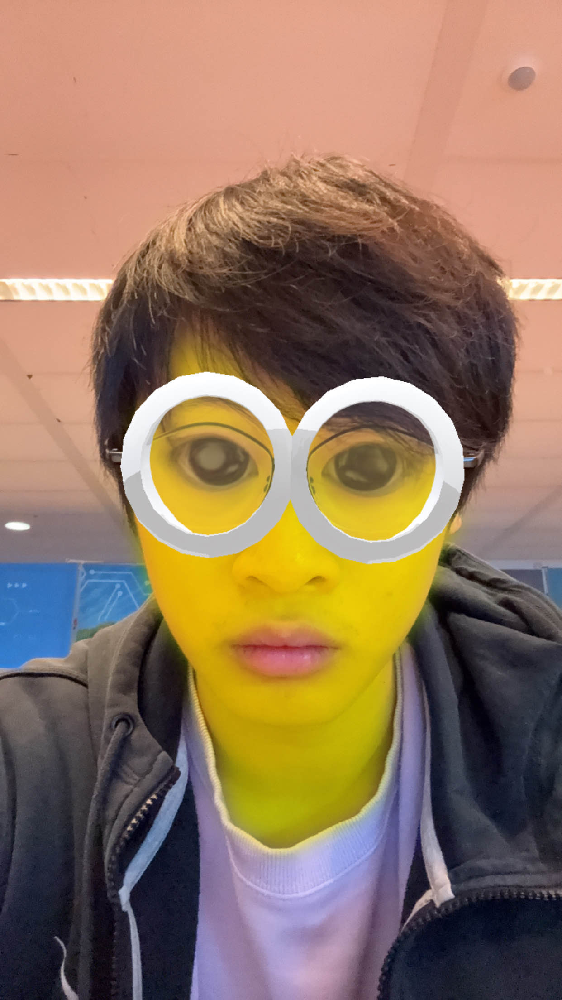

Mijn naam is Michael Wan en ik ben 19 jaar oud.
Voor het vak scrum maak ik elke week een opdracht en deze week is het opdracht html en daarvoor maak ik deze website maken.
Mijn doel is om een werkende webpagina te maken en uit te zoeken hoe ik te werk ga met HTML en CSS
Hiervoor heb ik deze website gebruikt:
https://www.w3schools.com/Mijn hobbies zijn:

HTML4 en HTML5 zijn verschillende versies van de taal waarmee websites worden gemaakt. Hieronder enkele belangrijke verschillen in simpele woorden:
HTML5 heeft nieuwe tags zoals <header>, <footer>, <article>, en <section> die helpen om de structuur van een webpagina duidelijker te maken. HTML4 had deze niet, dus je moest veel vaker gebruik maken van <div>-tags.
In HTML4 was het lastig om video's of audio toe te voegen. Je moest vaak speciale programma's zoals Flash gebruiken. HTML5 maakt dit veel makkelijker met de nieuwe <video> en <audio>-tags, waardoor je direct media kunt afspelen zonder extra software.
HTML5 voegt nieuwe type invoervelden toe, zoals date voor datums en email voor e-mailadressen. Dit maakt het eenvoudiger en veiliger om formulieren te maken. HTML4 had deze opties niet.
HTML5 is beter geschikt voor mobiele apparaten, waardoor het gemakkelijker wordt om websites te maken die goed werken op telefoons en tablets.
Kortom, HTML5 is moderner, veelzijdiger, en beter afgestemd op multimedia en mobiele apparaten dan HTML4.
Voornaam: Michael
Achternaam: Wan
Adres: Loggerstraat 26
Postcode: 1503KD
Woonplaats: Zaanstad
Mobiel nummer: 06-38349656
E-mailadres: wan.michael05@gmail.com
Geboortedatum: 16/09/2005
Geboorteplaats: Zaanstad
Burgerlijke staat: Ongehuwd
Geslacht: Man
Nationaliteit: Nederlandse
2023-2024: Exter B.V. - Vetgehalte, Zout bepaling d.m.v. titratie, Vochtgehalte, pH metingen, CZV-metingen, Kleurbepaling
Fitnessen, gamen